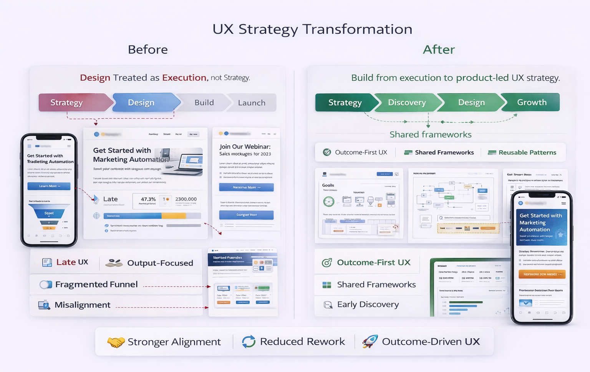

← Back
Case Study 10
UX Strategy Transformation
Shift from execution to product-led UX strategy
Context
Design treated as execution, not strategy
Problems
Late UX involvement
Output focus
Fragmented funnel
Misalignment
Strategy
Outcome-first UX
Shared frameworks
Early discovery
Reusable patterns
